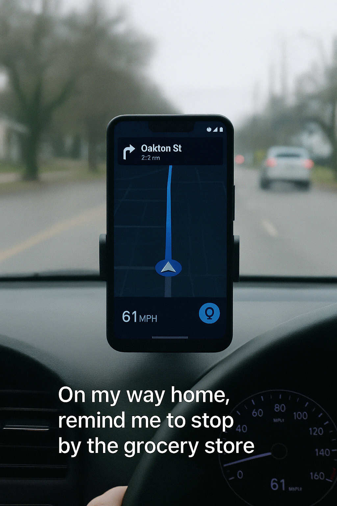

 Meet Rewatchman, your AI driving companion that’s built to make every drive smarter, safer, and more efficient.
Imagine having an assistant that not only guides you but anticipates your needs, learns from your daily routines, and offers personalized suggestions to make your driving experience seamless. Whether it’s a quick detour to avoid traffic or a reminder to stop for gas right when you need it, Rewatchman is there, constantly adapting to improve your drive. It’s not just navigation—it’s a driving companion that grows smarter the more you use it.
Today's GPS systems are static. You punch in a location, and they guide you there. Rewatchman is different—it lives with your routine. It’s not just navigation, it’s an intelligent companion that understands your habits and priorities.
Knows your routines. Automatically reminds you of tasks when relevant—like a real assistant.
Ask anything, set reminders, search for stops, or get updates—all hands-free.
Plans detours with purpose. Finds stops along your current path—not miles away.
Location-based offers shown respectfully. Think: intelligent, modern radio ads.
Voice assistants today are reactive. GPS apps don’t retain personal context. Rewatchman bridges the gap—offering intelligent, context-aware help before you even realize you need it. Whether it’s a simple reminder or a critical update, it delivers the right nudge at the right moment.
Rewatchman is built for daily drivers who do more than just commute. From busy parents juggling errands, to professionals managing tight schedules, to road warriors who live by routine—this app is for those who want more than passive navigation.
Rewatchman doesn’t just tell you where to go. It learns how you live and helps you get more done while staying focused on the drive.